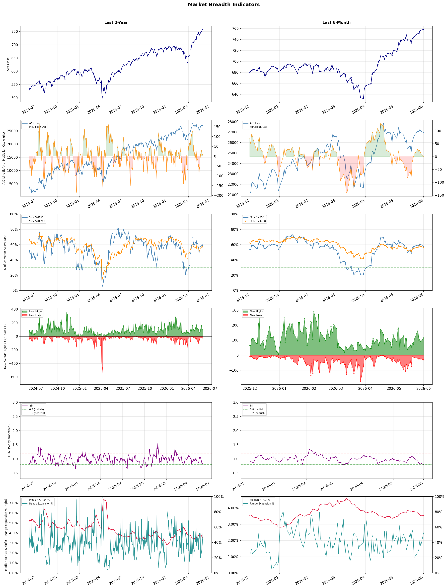

A daily research map of market breadth, industry rotation, and technical setups
| Item | Read |
|---|---|
| Regime downgraded | Risk-On → Selective Risk-On |
| Regime | Selective Risk-On |
| Risk posture | Selective |
| Indices | QQQ 742.74 (+0.6% today) |
| Universe | 1,706 stocks tracked · 116 new 52-week highs · 30 active swing setups |
| Breadth | 57.4% of tracked stocks are above SMA50 — neutral range, new highs exceed new lows (116 vs 31) |
| Leadership | Computer Hardware, Semiconductors, and Electronic Components |
| Weakest groups | Packaged Foods, Industrial Distribution, and Utilities - Regulated Electric |
Use this report to prioritize research and chart review; validate entries, stops, liquidity, earnings, and risk before acting.
| Item | Read |
|---|---|
| Primary read | Selective Risk-On regime with Selective risk posture. |
| Research queue | DELL, SNDK, IONQ, RGTI, SMCI |
| Leadership focus | Computer Hardware, Semiconductors, and Electronic Components |
| Caution list | Packaged Foods, Industrial Distribution, and Utilities - Regulated Electric |
| Review prompt | Check extension risk, chart location, fundamentals, valuation, and earnings before using any research row. |
| Item | Read |
|---|---|
| Primary read | 1 active risk warnings; use screen output as watchlist input only. |
| Bullish screens | DELL, LOGI, SNDK, ARM, AVGO |
| Bearish screens | none |
| Alerts / levels | Automated trigger, stop, ATR, liquidity, reward/risk, and event-risk levels are pending future enrichment. |
| Review prompt | Open the linked chart, define trigger and invalidation, then check liquidity and event risk independently. |
Risk Posture: Selective — screen backdrop supports selective research in leading industries
Metric context: McClellan below -50 = elevated selling pressure; below -100 = washout territory. Range Expansion = share of stocks with daily range above their 20-day average. Signal Density = share of tracked names appearing in signal screens.
| Breadth Date | % > SMA50 | % > SMA200 | New Highs | New Lows | McClellan | Median Range | Avg Range | Median ATR14 | Range Expansion | Signal Density |
|---|---|---|---|---|---|---|---|---|---|---|
| 2026-06-01 | 57.4% | 56.0% | 116 | 31 | 0.9 | 3.3% | 4.0% | 3.5% | 52.6% | 6.9% |

Regime downgraded: Risk-On → Selective Risk-On
Prior comparison date: May 29, 2026
| Metric | Prior | Current | Change |
|---|---|---|---|
| Regime | Risk-On | Selective Risk-On | changed |
| Risk Posture | Selective | Selective | unchanged |
| % > SMA50 | 60.4% | 57.4% | -3.0 pts |
| % > SMA200 | 57.9% | 56.0% | -1.9 pts |
| New Highs | 90 | 116 | +26 |
| New Lows | 25 | 31 | -6 |
Top-10 industries entering: Copper. Top-10 industries leaving: Electrical Equipment & Parts. New multi-signal long setups: ARMK, AVGO, BHP, DOCN, ELV, ERO, HNGE, HPE, IBKR, IBM. New multi-signal short setups: none.
| Status | Tickers | Read |
|---|---|---|
| Added | ARMK, AVGO, BHP, DOCN, ELV, ERO, HNGE, HPE | New technical screen matches vs prior report. |
| Removed | BWA, CRDO, DRS, F, FSLR, GE, JBLU, MS | No longer present in today's technical screen matches. |
| Still Active | ABCL, ARM, BB, CRWD, DDOG, DELL, FROG, GS | Appeared in both current and prior reports. |
| Promoted | none | Model Screen Score improved by at least 15 points. |
| Downgraded | none | Model Screen Score declined by at least 15 points. |
| Direction | Industry | ETF | Prior Rank | Current Rank | Days | Rank Change |
|---|---|---|---|---|---|---|
| Rose | Solar | TAN | 97 | 4 | 42 | +93 |
| Rose | Diagnostics & Research | N/A | 95 | 20 | 35 | +75 |
| Rose | Airlines | N/A | 91 | 16 | 35 | +75 |
| Rose | Copper | COPX | 83 | 8 | 28 | +75 |
| Rose | Footwear & Accessories | N/A | 92 | 18 | 14 | +74 |
Bull: The solar industry is experiencing a bullish trend primarily due to a significant shift in global energy dynamics, as highlighted by the recent headlines indicating that wind and solar have overtaken gas in energy generation. This transition is supported by increasing investments in low-emission power, as noted in the articles discussing green ETFs poised to benefit from this trend. Additionally, the potential limitation of solar exports from China could create supply constraints, further boosting the demand for domestic solar solutions and driving up the relative strength of solar stocks in comparison to other industries.
Bear: While the shift towards renewable energy is promising, the solar industry faces significant headwinds that could undermine its bullish outlook. The potential limitation of solar exports from China could lead to increased costs and supply chain disruptions, ultimately making solar solutions less competitive against other energy sources. Additionally, the recent surge in solar ETF prices may reflect speculative trading rather than sustainable growth fundamentals, raising concerns about overvaluation and the potential for a market correction as investors reassess the long-term viability of these stocks amidst ongoing regulatory and economic uncertainties.
Verdict: The solar industry's bullish trend is fundamentally driven by a global shift towards renewable energy, highlighted by increasing investments and a recent overtaking of gas by wind and solar in energy generation. However, a key risk lies in potential supply chain disruptions and cost increases due to limitations on solar exports from China, which could undermine the competitiveness of solar solutions and lead to market corrections if speculative trading inflates stock valuations without solid fundamentals. Investors should closely monitor supply chain developments and regulatory changes to assess the sustainability of this growth.
Sources: Yahoo Finance, Google News
Bull: The Diagnostics & Research sector is experiencing a rising relative strength primarily due to increased investor confidence in healthcare stocks, as highlighted by Morningstar's identification of the best healthcare stocks to buy, which suggests a positive outlook for the sector. Additionally, the sector-wide rally, evidenced by Waters' 5.3% jump, indicates a broader market enthusiasm for healthcare innovations, particularly in diagnostics, driven by advancements such as AI integration in healthcare, which is expected to enhance efficiency and accuracy in diagnostics and research.
Bear: While the rising relative strength in the Diagnostics & Research sector may suggest increased investor confidence, it is crucial to consider that this enthusiasm could be driven by speculative trading rather than fundamental improvements in the underlying businesses. The recent news of Harvest Investment Services dumping a significant number of Adaptive Biotechnologies shares raises concerns about potential overvaluation and market volatility, indicating that not all investors share the bullish outlook. Furthermore, the reliance on AI advancements, while promising, is still in its early stages, and the actual impact on profitability and market adoption remains uncertain, posing a risk to sustained growth in this sector.
Verdict: The Diagnostics & Research sector's rising strength is fundamentally driven by heightened investor confidence in healthcare stocks, bolstered by advancements in AI technology that promise to improve diagnostic efficiency and accuracy. However, the key risk lies in potential overvaluation and speculative trading behaviors, as evidenced by significant sell-offs like that of Adaptive Biotechnologies, which could lead to market volatility and undermine the sector's growth if fundamental improvements do not materialize. Investors should remain cautious and consider the sustainability of this rally amid these uncertainties.
Sources: Google News
Bull: The recent bullish trend in airline stocks is likely driven by a resurgence in travel demand as the global economy continues to recover, bolstered by positive sentiment reflected in headlines such as "United and Other Airline Stocks Are Flying" from Barron's, which suggests strong performance and growth potential. Additionally, the focus on "Best Airline Stocks to Buy Now" from Zacks and The Motley Fool indicates that analysts are recognizing the sector's resilience and profitability, further attracting investor interest and driving relative strength against other industries.
Bear: While the recent bullish trend in airline stocks may appear promising, it is crucial to consider the underlying vulnerabilities in the industry, such as rising fuel costs, labor shortages, and potential economic downturns that could dampen travel demand. Additionally, the headlines may reflect short-term optimism rather than sustainable growth, as the airline industry is notoriously cyclical and sensitive to external shocks, such as geopolitical tensions or health crises, which could quickly reverse the current upward momentum.
Verdict: The recent bullish trend in airline stocks is primarily driven by a resurgence in travel demand as the global economy recovers, with analysts highlighting the sector's resilience and growth potential. However, investors should remain cautious of key risks, including rising fuel costs and labor shortages, which could undermine profitability and dampen travel demand, especially in the face of potential economic downturns or external shocks.
Sources: Google News
Bull: Copper is experiencing rising relative strength primarily due to its critical role in the transition to renewable energy and grid resilience, as highlighted by the recent focus on ETFs covering energy infrastructure and the booming demand for copper in technologies like AI and alternative energy. The mention of a "copper supercycle" suggests strong long-term demand driven by infrastructure investments and the electrification of various sectors, further supported by the impressive returns of copper-focused ETFs and the performance of US copper mining stocks. This combination of macroeconomic trends and sector-specific drivers positions copper favorably in the current investment landscape.
Bear: While the bullish case for copper emphasizes its role in renewable energy and infrastructure, it's important to consider the potential headwinds that could undermine this narrative. The current rise in copper prices may be overstated, driven by speculative trading rather than sustainable demand; economic slowdowns in key markets, such as China, could significantly dampen consumption. Additionally, the rapid advancements in alternative materials and recycling technologies could reduce long-term copper demand, challenging the notion of a "supercycle" and making the impressive returns of copper ETFs less reliable as a predictor of future performance.
Verdict: Copper's rising strength is fundamentally driven by its essential role in the transition to renewable energy and infrastructure development, fueled by increasing demand from sectors like AI and electric vehicles. However, investors should remain cautious of potential headwinds, particularly economic slowdowns in major markets like China and the threat posed by advancements in alternative materials and recycling technologies, which could undermine long-term demand for copper.
Sources: Yahoo Finance, Google News
Bull: The Footwear & Accessories industry is experiencing a rising relative strength primarily due to strong earnings performance, as highlighted by recent outperformers like Shoe Carnival, which indicates robust consumer demand and effective management strategies. Additionally, the industry's adaptability to new regulations, such as the EU's rules to prevent the destruction of unsold inventory, positions it favorably for sustainable growth, attracting investor interest and confidence in long-term profitability. This combination of positive earnings momentum and regulatory compliance is driving the sector's upward trajectory compared to other industries.
Bear: While the Footwear & Accessories industry may currently exhibit rising relative strength and strong earnings from select players, this performance could be misleading as it is heavily influenced by short-term trends and seasonal demand spikes rather than sustainable growth. Additionally, the new EU regulations aimed at preventing the destruction of unsold inventory may impose significant operational challenges and costs for companies that struggle with excess stock, which could ultimately dampen profitability and hinder long-term growth prospects in a market that is already facing increasing competition and shifting consumer preferences towards sustainability.
Verdict: The Footwear & Accessories industry's rising relative strength is primarily driven by strong earnings performance and effective management strategies, particularly evident in outperformers like Shoe Carnival, signaling robust consumer demand. However, a key risk lies in the potential operational challenges and costs associated with new EU regulations on unsold inventory, which could impact profitability and hinder long-term growth if companies fail to adapt effectively. Investors should closely monitor these regulatory impacts and seasonal demand fluctuations to assess the sustainability of the industry's upward trajectory.
Sources: Google News
| Direction | Industry | ETF | Prior Rank | Current Rank | Days | Rank Change |
|---|---|---|---|---|---|---|
| Fell | Uranium | URA | 13 | 93 | 28 | -80 |
| Fell | Apparel Manufacturing | N/A | 8 | 83 | 42 | -75 |
| Fell | Utilities - Regulated Gas | XLU | 20 | 95 | 28 | -75 |
| Fell | Engineering & Construction | N/A | 12 | 81 | 28 | -69 |
| Fell | Oil & Gas Drilling | XES | 2 | 69 | 14 | -67 |
Bear: While the bull analyst highlights a broader market focus on AI and alternative energy, the persistent relative weakness in the Uranium sector, as evidenced by the falling trend of the URA ETF, suggests deeper underlying issues that cannot be overlooked. Concerns about regulatory hurdles, high capital costs for new nuclear projects, and the slow pace of nuclear plant approvals may hinder the sector's growth potential, overshadowing any long-term bullish sentiment. Additionally, the liquidity issues with smaller ETFs like NUKZ could indicate a lack of investor confidence in the Uranium market, further complicating the investment landscape.
Bull: The relative weakness of the Uranium sector, as indicated by the ETF URA, can be attributed to a broader market focus on more immediate themes such as AI and alternative energy, which are currently capturing investor attention, as highlighted in the headlines discussing "3 Market Themes Driving Stocks Right Now." Additionally, the liquidity concerns surrounding smaller ETFs like NUKZ, which have less than $1 billion in assets, may deter investors from committing to the Uranium sector, despite the long-term bullish outlook for nuclear energy as a solution to rising electricity demands driven by AI.
Verdict: The Uranium sector's decline appears to stem from a combination of shifting investor focus towards more immediate themes like AI and alternative energy, alongside significant regulatory and capital cost challenges that hinder new nuclear projects. The key risk from the bear case is that these persistent hurdles could undermine long-term growth prospects, leading to continued investor skepticism and further declines in sector performance. Investors should closely monitor regulatory developments and capital flow trends to gauge potential recovery signals in the Uranium market.
Sources: Yahoo Finance, Google News
Bear: While the bull analyst suggests that the current downturn in the Apparel Manufacturing sector is merely a temporary reaction to macroeconomic factors, the persistent decline in relative strength indicates deeper issues, such as changing consumer preferences and increased competition from fast fashion and e-commerce. Additionally, the sector's reliance on discretionary spending makes it particularly vulnerable to economic downturns, and the recent headlines highlighting sector-wide selling, including Columbia Sportswear's significant drop, underscore a lack of investor confidence that could hinder any potential recovery.
Bull: The Apparel Manufacturing sector is currently experiencing a decline in relative strength primarily due to broader sector-wide selling pressures, as highlighted by Columbia Sportswear's 5.4% drop amid negative sentiment. Despite this, recent articles from Yahoo Finance and Forbes indicate that there are well-poised stocks within the industry, suggesting that the current downturn may be a temporary reaction to macroeconomic factors rather than a reflection of the sector's underlying fundamentals. Additionally, the focus on investment opportunities in apparel stocks, as noted by The Motley Fool and MarketBeat, signals potential for recovery and growth as the market stabilizes.
Verdict: The Apparel Manufacturing sector's decline is primarily driven by macroeconomic pressures and shifting consumer preferences, which have intensified competition from fast fashion and e-commerce. The key risk from the bear case is the sector's heavy reliance on discretionary spending, making it particularly susceptible to economic downturns and diminishing investor confidence, which could impede any potential recovery. Investors should remain cautious and monitor consumer trends and economic indicators closely before making any decisions in this space.
Sources: Google News
Bear: While the bull analyst highlights macroeconomic concerns and regulatory uncertainty, it's crucial to note that utilities, particularly regulated gas companies, have historically been seen as defensive investments during economic downturns due to their stable cash flows and essential services. However, rising interest rates can significantly increase their cost of capital, squeezing margins and limiting growth potential. Furthermore, the looming PJM decision may impose stricter regulations or increase operational costs, further compounding the sector's challenges and leading to diminished investor confidence in the near term.
Bull: The Utilities - Regulated Gas sector is likely experiencing a decline in relative strength due to macroeconomic concerns surrounding inflation and interest rates, as highlighted by the Fed's pivot to focus on inflation under incoming Chair Warsh. This shift can lead to increased borrowing costs for utilities, which are capital-intensive and heavily reliant on debt financing. Additionally, the upcoming PJM’s March 2027 Data Center Framework Decision may create uncertainty in regulatory environments, further impacting investor sentiment in the sector.
Verdict: The Utilities - Regulated Gas sector is likely declining due to rising interest rates and inflation concerns, which elevate borrowing costs and pressure profit margins for capital-intensive companies. The upcoming PJM decision adds regulatory uncertainty that could further impact operational costs and investor confidence. Investors should closely monitor interest rate trends and the implications of regulatory changes to assess the sector's stability and potential for recovery.
Sources: Yahoo Finance, Google News
Bear: While the bull analyst points to sector-wide selling as a temporary issue, the fundamental challenges facing the Engineering & Construction sector are more systemic. Rising interest rates are not only increasing borrowing costs but also leading to tighter budgets for infrastructure projects, which could result in prolonged delays and cancellations. Furthermore, the hype around AI infrastructure may divert investment away from traditional construction projects, leaving the sector vulnerable to stagnation as it struggles to adapt to technological advancements and shifting market demands.
Bull: The Engineering & Construction sector is experiencing a decline in relative strength primarily due to sector-wide selling pressure, as evidenced by Everus Construction Group's 5.2% drop, which reflects broader market concerns affecting investor sentiment. Additionally, while the headlines highlight an AI infrastructure boom driving gains in related industries, the Engineering & Construction sector may be lagging due to its cyclical nature and potential delays in project approvals or funding, which can dampen growth expectations amidst rising interest rates and economic uncertainty.
Verdict: The Engineering & Construction sector's decline is primarily driven by systemic challenges, including rising interest rates that elevate borrowing costs and tighten project budgets, leading to potential delays and cancellations. The key risk highlighted by the bear case is that the sector may struggle to adapt to technological advancements and shifting market demands, particularly as investment flows towards AI infrastructure, leaving traditional construction projects underfunded and vulnerable to stagnation. Investors should closely monitor interest rate trends and project approval timelines to gauge the sector's recovery potential.
Sources: Google News
Bear: While the bull analyst highlights macroeconomic factors and the essential nature of the oil and gas sector, the persistent decline in the relative strength of the XES ETF suggests deeper structural issues, such as overcapacity, rising operational costs, and increasing regulatory pressures aimed at reducing carbon emissions. Furthermore, the growing investor preference for alternative energy solutions and ETFs that capitalize on oil price fluctuations without direct exposure indicates a fundamental shift in market sentiment away from traditional oil and gas drilling, which may hinder any potential rebound in the sector.
Bull: The falling relative strength of the Oil & Gas Drilling sector, as reflected in the ETF XES, is likely driven by macroeconomic factors such as fluctuating oil prices and geopolitical tensions, as highlighted in the recent headlines discussing the impact of Middle East news on oil stocks. Additionally, the focus on alternative energy sources and the rise of ETFs that provide exposure to oil price surges without direct investment may be diverting capital away from traditional drilling stocks, suggesting a shift in investor sentiment. This context underscores the potential for a rebound, as the sector remains essential to global energy supply amidst ongoing volatility.
Verdict: The Oil & Gas Drilling sector's decline, as indicated by the falling relative strength of the XES ETF, is primarily driven by macroeconomic volatility and a significant shift in investor sentiment towards alternative energy solutions, which is compounded by structural challenges such as overcapacity and rising operational costs. The key risk from the bear case lies in the increasing regulatory pressures aimed at reducing carbon emissions, which could further entrench the sector's decline and limit any potential recovery. Investors should closely monitor these dynamics and consider diversifying into alternative energy investments to mitigate exposure to traditional oil and gas drilling stocks.
Sources: Yahoo Finance, Google News
| Industry | Rank | ETF | 7d | 14d | 28d | 42d | Chg 42d | Size | 20D | 60D | Composite | Active Setups |
|---|---|---|---|---|---|---|---|---|---|---|---|---|
| Computer Hardware | 1 | XLK | 1 | 6 | 3 | 6 | +5 | 14 | 40.6% | 82.7% | 0.980 | 2 |
| Semiconductors | 2 | SOXX | 2 | 1 | 1 | 2 | 0 | 36 | 30.1% | 102.2% | 0.976 | 3 |
| Electronic Components | 3 | XLK | 8 | 7 | 5 | 4 | +1 | 9 | 21.9% | 54.9% | 0.974 | 1 |
| Solar | 4 | TAN | 3 | 14 | 55 | 97 | +93 | 8 | 39.9% | 55.3% | 0.973 | 0 |
| Trucking | 5 | IYT | 11 | 22 | 34 | 5 | 0 | 5 | 18.2% | 29.1% | 0.939 | 2 |
| Communication Equipment | 6 | IYZ | 4 | 5 | 6 | 3 | -3 | 17 | 15.9% | 51.1% | 0.899 | 3 |
| Steel | 7 | SLX | 6 | 16 | 18 | 23 | +16 | 6 | 13.4% | 24.6% | 0.895 | 1 |
| Copper | 8 | COPX | 62 | 70 | 83 | 13 | +5 | 6 | 17.9% | 9.4% | 0.886 | 3 |
| REIT - Hotel & Motel | 9 | XLRE | 9 | 13 | 16 | 16 | +7 | 7 | 11.4% | 16.5% | 0.886 | 2 |
| Semiconductor Equipment & Materials | 10 | SOXX | 10 | 12 | 2 | 1 | -9 | 18 | 8.3% | 50.2% | 0.885 | 3 |
Rank columns (7d–42d) show the industry's rank that many trading days ago — lower is stronger. Chg 42d = rank change vs 42 trading days ago — positive means the industry moved up. 20D and 60D are the mean stock return within the industry over that period. Active Setups: count of today's swing-trade candidates from this industry appearing across all signal screens.
| Industry | Rank | ETF | 7d | 14d | 28d | 42d | Chg 42d | Size | 20D | 60D | Composite | Active Setups |
|---|---|---|---|---|---|---|---|---|---|---|---|---|
| Packaged Foods | 98 | XLP | 97 | 94 | 95 | 95 | -3 | 17 | -9.0% | -18.0% | 0.085 | 2 |
| Industrial Distribution | 97 | N/A | 96 | 93 | 58 | 38 | -59 | 6 | -9.9% | -9.0% | 0.115 | 1 |
| Utilities - Regulated Electric | 96 | XLU | 67 | 73 | 69 | 62 | -34 | 29 | -6.3% | -7.1% | 0.124 | 1 |
| Utilities - Regulated Gas | 95 | XLU | 65 | 55 | 20 | 30 | -65 | 6 | -10.1% | -4.6% | 0.131 | 1 |
| REIT - Mortgage | 94 | N/A | 88 | 72 | 67 | 74 | -20 | 15 | -7.6% | -5.6% | 0.136 | 2 |
| Uranium | 93 | URA | 95 | 83 | 13 | 36 | -57 | 6 | -9.9% | -6.3% | 0.155 | 0 |
| Waste Management | 92 | N/A | 86 | 65 | 90 | 94 | +2 | 5 | -4.5% | -9.7% | 0.155 | 0 |
| Furnishings, Fixtures & Appliances | 91 | N/A | 98 | 98 | 89 | 79 | -12 | 7 | -7.3% | -12.2% | 0.166 | 2 |
| Household & Personal Products | 90 | XLP | 89 | 90 | 84 | 96 | +6 | 12 | -5.1% | -12.6% | 0.173 | 2 |
| Discount Stores | 89 | XRT | 84 | 52 | 81 | 76 | -13 | 6 | -2.6% | -7.9% | 0.192 | 1 |
Rank columns (7d–42d) show the industry's rank that many trading days ago — lower is stronger. Chg 42d = rank change vs 42 trading days ago — positive means the industry moved up. 20D and 60D are the mean stock return within the industry over that period. Active Setups: count of today's swing-trade candidates from this industry appearing across all signal screens.
These are research candidates from top-ranked stocks, capped at five names per industry to avoid over-concentration. Returns shown (60D, 120D, 250D) are historical — they reflect where prices have already moved, not forward expectations. Extension Risk flags names that may require extra patience or a better entry point. They are not buy signals.
Chart: TV = TradingView chart (opens in browser); PDF = local chart file (if downloaded).
| Ticker | Name | Industry | Industry Rank | Market Cap | 60D Hist | 120D Hist | 250D Hist | Extension Risk | Research Reason | Chart |
|---|---|---|---|---|---|---|---|---|---|---|
| DELL | Dell Technologies | Computer Hardware | 1 | 97.1B | 218.0% | 235.4% | 331.1% | Very extended | Top-ranked in industry; very extended | TV · PDF |
| SNDK | SanDisk | Computer Hardware | 1 | 77.8B | 211.4% | 671.0% | 4618.5% | Very extended | Top-ranked in industry; very extended | TV · PDF |
| IONQ | IonQ Inc | Computer Hardware | 1 | 13.1B | 92.3% | 31.5% | 70.8% | Extended | Top-ranked in industry; extended | TV · PDF |
| RGTI | Rigetti Computing | Computer Hardware | 1 | 5.6B | 51.0% | -8.8% | 109.1% | Extended | Top-ranked in industry; extended | TV · PDF |
| SMCI | Super Micro Computer | Computer Hardware | 1 | 18.8B | 45.4% | 35.1% | 13.8% | Constructive | Top-ranked in industry | TV · PDF |
| ARM | Arm Holdings | Semiconductors | 2 | 121.5B | 239.0% | 189.3% | 224.3% | Very extended | Top-ranked in industry; very extended | TV · PDF |
| VSH | Vishay Intertechnology | Semiconductors | 2 | 2.3B | 226.9% | 268.4% | 301.6% | Very extended | Top-ranked in industry; very extended | TV · PDF |
| HIMX | Himax Technologies | Semiconductors | 2 | 1.3B | 185.3% | 141.6% | 163.7% | Very extended | Top-ranked in industry; very extended | TV · PDF |
| MU | Micron Technology | Semiconductors | 2 | 416.8B | 160.8% | 336.5% | 954.7% | Very extended | Top-ranked in industry; very extended | TV · PDF |
| POET | POET Technologies | Semiconductors | 2 | 959.0M | 109.2% | 129.6% | 232.3% | Very extended | Top-ranked in industry; very extended | TV · PDF |
| FLEX | Flex Ltd | Electronic Components | 3 | 22.0B | 133.0% | 137.2% | 249.2% | Very extended | Top-ranked in industry; very extended | TV · PDF |
| OUST | Ouster | Electronic Components | 3 | 1.3B | 112.1% | 81.3% | 251.3% | Very extended | Top-ranked in industry; very extended | TV · PDF |
| TTMI | TTM Technologies | Electronic Components | 3 | 9.1B | 74.3% | 133.8% | 477.9% | Extended | Top-ranked in industry; extended | TV · PDF |
| RAL | Ralliant | Electronic Components | 3 | 5.0B | 32.6% | 20.3% | 29.4% | Constructive | Top-ranked in industry | TV · PDF |
| GLW | Corning | Electronic Components | 3 | 105.8B | 31.1% | 105.5% | 253.1% | Extended | Top-ranked in industry; extended | TV · PDF |
| SEDG | SolarEdge Technologies | Solar | 4 | 2.0B | 115.1% | 156.8% | 343.3% | Very extended | Top-ranked in industry; very extended | TV · PDF |
| SHLS | Shoals Technologies | Solar | 4 | 956.1M | 108.2% | 51.7% | 167.1% | Very extended | Top-ranked in industry; very extended | TV · PDF |
| FSLR | First Solar | Solar | 4 | 20.3B | 58.0% | 17.6% | 102.5% | Extended | Top-ranked in industry; extended | TV · PDF |
| ENPH | Enphase Energy | Solar | 4 | 5.3B | 54.9% | 104.0% | 54.3% | Extended | Top-ranked in industry; extended | TV · PDF |
| NXT | Nextpower | Solar | 4 | 15.1B | 40.2% | 60.1% | 162.3% | Constructive | Top-ranked in industry | TV · PDF |
These are technical screen matches from existing signal files. They are not trade recommendations. Trigger, stop, ATR, liquidity, reward/risk, and event risk still require separate validation until those inputs are available.
Model Screen Score is weighted by signal count, industry rank, freshness, and setup type. It is not a probability of profit, expected return, or suitability rating. Industry cap: max 3 candidates per industry.
Signal glossary: Momentum Pullback = stock in an uptrend that has pulled back 10–30% and shows re-entry conditions. MA Compression = short- and long-term moving averages converging, often preceding a directional move. Three-Day Up/Down = three consecutive closes in the same direction. New 52Wk High/Low = price reached a new annual extreme.
Chart: TV = TradingView chart (opens in browser); PDF = local chart file (if downloaded).
| Ticker | Industry | Setups | Close | Industry Rank | Signal Count | Model Screen Score | Reason | Chart |
|---|---|---|---|---|---|---|---|---|
| DELL | Computer Hardware | New 52Wk High; Three-Day Up | 465.96 | 1 | 2 | 100 | Multi-signal; top industry breakout | TV · PDF |
| LOGI | Computer Hardware | New 52Wk High; Three-Day Up | 126.67 | 1 | 2 | 100 | Multi-signal; top industry breakout | TV · PDF |
| SNDK | Computer Hardware | New 52Wk High; Three-Day Up | 1761.43 | 1 | 2 | 100 | Multi-signal; top industry breakout | TV · PDF |
| ARM | Semiconductors | New 52Wk High; Three-Day Up | 408.85 | 2 | 2 | 100 | Multi-signal; top industry breakout | TV · PDF |
| AVGO | Semiconductors | New 52Wk High; Three-Day Up | 459.97 | 2 | 2 | 100 | Multi-signal; top industry breakout | TV · PDF |
| MU | Semiconductors | New 52Wk High; Three-Day Up | 1035.50 | 2 | 2 | 100 | Multi-signal; top industry breakout | TV · PDF |
| KNX | Trucking | New 52Wk High; Three-Day Up | 77.92 | 5 | 2 | 93 | Multi-signal; top industry breakout | TV · PDF |
| ODFL | Trucking | New 52Wk High; Three-Day Up | 228.53 | 5 | 2 | 93 | Multi-signal; top industry breakout | TV · PDF |
| HPE | Communication Equipment | New 52Wk High; Three-Day Up | 47.00 | 6 | 2 | 93 | Multi-signal; top industry breakout | TV · PDF |
| PK | REIT - Hotel & Motel | MA Compression; New 52Wk High | 12.90 | 9 | 2 | 90 | Multi-signal; top industry breakout | TV · PDF |
| ERO | Copper | Momentum Pullback; Three-Day Up | 31.42 | 8 | 2 | 85 | Multi-signal; top industry pullback | TV · PDF |
| HBM | Copper | New 52Wk High; Three-Day Up | 30.59 | 8 | 2 | 85 | Multi-signal; top industry breakout | TV · PDF |
| BB | Software - Infrastructure | New 52Wk High; Three-Day Up | 9.72 | 12 | 2 | 85 | Multi-signal; new-high strength | TV · PDF |
| CRWD | Software - Infrastructure | New 52Wk High; Three-Day Up | 782.17 | 12 | 2 | 85 | Multi-signal; new-high strength | TV · PDF |
| DOCN | Software - Infrastructure | New 52Wk High; Three-Day Up | 173.45 | 12 | 2 | 85 | Multi-signal; new-high strength | TV · PDF |
| ELV | Healthcare Plans | New 52Wk High; Three-Day Up | 402.66 | 13 | 2 | 85 | Multi-signal; new-high strength | TV · PDF |
| MGM | Resorts & Casinos | New 52Wk High; Three-Day Up | 50.69 | 15 | 2 | 85 | Multi-signal; new-high strength | TV · PDF |
| GS | Capital Markets | New 52Wk High; Three-Day Up | 1048.58 | 17 | 2 | 77 | Multi-signal; new-high strength | TV · PDF |
| HUT | Capital Markets | New 52Wk High; Three-Day Up | 132.38 | 17 | 2 | 77 | Multi-signal; new-high strength | TV · PDF |
| IBKR | Capital Markets | New 52Wk High; Three-Day Up | 88.69 | 17 | 2 | 77 | Multi-signal; new-high strength | TV · PDF |
| BHP | Other Industrial Metals & Mining | New 52Wk High; Three-Day Up | 91.22 | 19 | 2 | 77 | Multi-signal; new-high strength | TV · PDF |
| ILMN | Diagnostics & Research | New 52Wk High; Three-Day Up | 164.40 | 20 | 2 | 77 | Multi-signal; new-high strength | TV · PDF |
| HNGE | Health Information Services | New 52Wk High; Three-Day Up | 60.92 | 21 | 2 | 77 | Multi-signal; new-high strength | TV · PDF |
| DDOG | Software - Application | New 52Wk High; Three-Day Up | 277.49 | 26 | 2 | 70 | Multi-signal; new-high strength | TV · PDF |
| FROG | Software - Application | New 52Wk High; Three-Day Up | 88.31 | 26 | 2 | 70 | Multi-signal; new-high strength | TV · PDF |
| ABCL | Biotechnology | New 52Wk High; Three-Day Up | 6.46 | 28 | 2 | 70 | Multi-signal; new-high strength | TV · PDF |
| RVMD | Biotechnology | New 52Wk High; Three-Day Up | 163.68 | 28 | 2 | 70 | Multi-signal; new-high strength | TV · PDF |
| PBI | Integrated Freight & Logistics | New 52Wk High; Three-Day Up | 16.92 | 33 | 2 | 70 | Multi-signal; new-high strength | TV · PDF |
| ARMK | Specialty Business Services | New 52Wk High; Three-Day Up | 54.39 | 39 | 2 | 70 | Multi-signal; new-high strength | TV · PDF |
| IBM | Information Technology Services | New 52Wk High; Three-Day Up | 320.42 | 45 | 2 | 65 | Multi-signal; new-high strength | TV · PDF |
How To Use This Report
| Use | Purpose |
|---|---|
| Market map | Start with breadth, regime, risk warnings, and what changed since the prior report. |
| Industry scan | Use leading, deteriorating, rising, and declining industries to focus research. |
| Research queue | Treat long-term candidates as names for deeper fundamental, valuation, and chart review. |
| Technical review | Treat bullish and bearish screen matches as watchlist inputs that require independent trigger, stop, liquidity, and event-risk checks. |
| Source follow-up | Use chart links and source files to verify raw inputs before relying on any row. |
What This Report Is Not
| Not | Meaning |
|---|---|
| Investment advice | The report does not evaluate personal objectives, risk tolerance, tax situation, account type, or suitability. |
| Buy/sell recommendation | Named tickers are research candidates or screen matches, not recommendations to transact. |
| Price target | The report does not provide fair value estimates, targets, or expected returns. |
| Trade plan | Trigger, stop, sizing, reward/risk, liquidity, and event-risk review remain separate user work. |
| Performance claim | Model Screen Score is not validated historical performance or a forecast of future results. |
| Item | Note |
|---|---|
| Version | Daily Report Methodology v1 |
| Model Screen Score | Screen-fit rank based on signal count, industry rank, freshness, and setup type. |
| Not predictive proof | The score is not expected return, probability of profit, historical validation, or suitability analysis. |
| Industry ranks | Composite industry ranks use existing daily ranking outputs and historical rank columns when available. |
| Research candidates | Long-term rows are research candidates from ranked stocks and leading industries, with historical returns labeled as historical only. |
| Technical matches | Bullish and bearish rows are screen matches requiring independent chart, trigger, stop, liquidity, and event-risk review. |
| Source | Status | Rows | Path |
|---|---|---|---|
| Market breadth | present | 1254 | breadth_20260601.csv |
| Industry composite rankings | present | 98 | all_industry_composite_20260601.csv |
| Top ranked stocks | present | 126 | top_ranked_composite_20260601.csv |
| All ranked stocks | present | 1706 | all_stocks_composite_sorted_20260601.csv |
| Top momentum pullbacks | present | 1801 | top_momentum_pullbacks_20260601.csv |
| MA compression | present | 1801 | ma_compression_stocks_20260601.csv |
| Three-day up/down | present | 290 | three_day_up_down_stocks_20260601.csv |
| New 52-week members | present | 147 | breadth_new_52wk_members_20260601.csv |
This report is generated from automated technical screens and is for informational and research purposes only. It is not investment advice, a solicitation, or a recommendation to buy or sell any security. Past performance is not indicative of future results. You are solely responsible for your own investment decisions. Consult a licensed financial advisor before acting on any information herein.